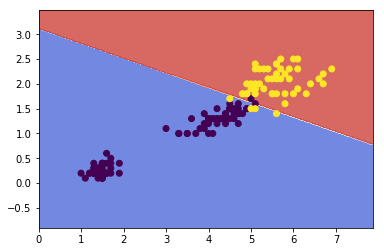

Training Objective
The smaller the weight vector w, the larger the margin. So we want to minimize \(\lVert w\rVert\) to get a large margin.
Hard Margin
If we also want to avoid any margin violation (hard margin), then we need the decision function to be greater than 1 for all positive trainig instances, and lower than -1 for negative training instances. If we define \(t^{(i)} = -1\) for negative instances (if \(y^{(i)}>0\)) and \(t^{(i)}=1\) for positive instances (if \(y^{(i)}=1\)), then we can express this constraint as \(t^{(i)}(w^T\cdot x^{(i)}+b) \le 1\) for all instances.
- Hard Margin linear SVM classifier objective
\[
\min_{w,b} \frac{1}{2}w^T\cdot w \\
\text{subject to } t^{(i)}(w^T\cdot x^{(i)}+b) \le 1 \quad for \quad i =1,2,...,m
\]
Soft Margin
To get the soft margin objective, we need to introduce a slack variable \(\zeta^(i)\le0\) for each instance: \(\zeta^{(i)}\) measures how much the \(i^{th}\) instance is allowed to violate the margin. We now have two conflicting objectives: making the slack variables as small as possible to reduce the margin violations, and makeing \(\frac{1}{2}w^T\cdot w \) as small as possible to increase the margin.
Soft Margin linear SVM classifier objective
\[
\min_{w,b} \frac{1}{2}w^T\cdot w + C\sum^m_{i=1}\zeta^{(i)}\\
\text{subject to } t^{(i)}(w^T\cdot x^{(i)}+b) \le 1 - \zeta^{(i)} \quad for \quad i =1,2,...,m
\]
Implementation
import numpy as np
from sklearn import datasets
from sklearn.pipeline import Pipeline
from sklearn.preprocessing import StandardScaler
from sklearn.svm import LinearSVC
from sklearn.svm import SVC
import matplotlib.pyplot as plt
Soft Margin Classification
# load data sets
iris = datasets.load_iris()
x = iris['data'][:,(2,3)] # petal length, petal width
y = (iris['target'] == 2).astype(np.float64) # Iris-Virginica
%matplotlib inline
plt.scatter(x[:,0], x[:,1], c=y)
<matplotlib.collections.PathCollection at 0x110ecf0f0>

# plot decision boundary
def make_meshgrid(x, y, h=.02):
"""Create a mesh of points to plot in
Parameters
----------
x: data to base x-axis meshgrid on
y: data to base y-axis meshgrid on
h: stepsize for meshgrid, optional
Returns
-------
xx, yy : ndarray
"""
x_min, x_max = x.min() - 1, x.max() + 1
y_min, y_max = y.min() - 1, y.max() + 1
xx, yy = np.meshgrid(np.arange(x_min, x_max, h),
np.arange(y_min, y_max, h))
return xx, yy
def plot_contours(model, xx, yy, **params):
"""Plot the decision boundaries for a classifier.
Parameters
----------
ax: matplotlib axes object
clf: a classifier
xx: meshgrid ndarray
yy: meshgrid ndarray
params: dictionary of params to pass to contourf, optional
"""
Z = model.predict(np.c_[xx.ravel(), yy.ravel()])
Z = Z.reshape(xx.shape)
out = plt.contourf(xx, yy, Z, **params)
return out
# svm
svm_clf = Pipeline([
('scalar', StandardScaler()),
('linear_svc', LinearSVC(C=1, loss='hinge'))])
svm_clf.fit(x, y)
Pipeline(steps=[('scalar', StandardScaler(copy=True, with_mean=True, with_std=True)), ('linear_svc', LinearSVC(C=1, class_weight=None, dual=True, fit_intercept=True,
intercept_scaling=1, loss='hinge', max_iter=1000, multi_class='ovr',
penalty='l2', random_state=None, tol=0.0001, verbose=0))])
plot_contours(svm_clf, xx, yy,
cmap=plt.cm.coolwarm, alpha=0.8)
plt.hold
plt.scatter(x[:,0], x[:,1], c=y)
<matplotlib.collections.PathCollection at 0x111e5c128>

Nonelinear SVM Classification
One approach to handling nonlinear datasets is to add more features, such as polynomial features. In some cases result in a linearly separable dataset.
from sklearn.preprocessing import PolynomialFeatures
polynomial_svm_clf = Pipeline([
('poly_features', PolynomialFeatures(degree=3)),
('scaler', StandardScaler()),
('svm, clf', LinearSVC(C=10, loss='hinge'))
])
polynomial_svm_clf.fit(x, y)
Pipeline(steps=[('poly_features', PolynomialFeatures(degree=3, include_bias=True, interaction_only=False)), ('scaler', StandardScaler(copy=True, with_mean=True, with_std=True)), ('svm, clf', LinearSVC(C=10, class_weight=None, dual=True, fit_intercept=True,
intercept_scaling=1, loss='hinge', max_iter=1000, multi_class='ovr',
penalty='l2', random_state=None, tol=0.0001, verbose=0))])
xx, yy = make_meshgrid(x[:,0], x[:,1])
plot_contours(polynomial_svm_clf, xx, yy,
cmap=plt.cm.coolwarm, alpha=0.8)
plt.hold
plt.scatter(x[:,0], x[:,1], c=y)
<matplotlib.collections.PathCollection at 0x112f0a470>

Gaussian RBF Kernal
Define the similarity function to be the Gaussian Radial Basis Function (RBF):
\[\phi(x, \gamma) = exp(-\gamma \lVert x-l\rVert ^2)\]
Let's try the Gaussian RBF kernel using the SVC class:
rbf_kernel_svm_clf = Pipeline([
('svm_clf', SVC(kernel='rbf', gamma=0.1, C=0.1))
])
rbf_kernel_svm_clf.fit(x,y)
Pipeline(steps=[('svm_clf', SVC(C=0.1, cache_size=200, class_weight=None, coef0=0.0,
decision_function_shape=None, degree=3, gamma=0.1, kernel='rbf',
max_iter=-1, probability=False, random_state=None, shrinking=True,
tol=0.001, verbose=False))])
plot_contours(rbf_kernel_svm_clf, xx, yy,
cmap=plt.cm.coolwarm, alpha=0.8)
plt.hold
plt.scatter(x[:,0], x[:,1], c=y)
<matplotlib.collections.PathCollection at 0x114174518>

Other kernals such as sigmoid, precomputed are also used. With so many kernels to choose from, as a rule of thumb, you should always try the linear kernel first, especailly if the training set is very large or if it has plenty of features. If the training set is not too large, you should try the Gaussian RBF kernel as well; it works well in most cases.
Complexity
Time complexity of algorithms above:
LinearSVC: \(O(m\times n)\)SGDClassifier: \(O(m\times n)\)SVC: \(O(m^2\times n) \text{ to } O(m^3\times n)\)